QQ互联
QQ互联提供了“QQ帐号注册”、“QQ帐号登录”、“分享到QQ好友和群、QQ空间、腾讯微博、朋友网”、“回帖同步到微博”和“微博回流”等功能，使用QQ账号注册、登录，可以大大降低游客注册、登录论坛的门槛，提升网站游客到注册用户的转化率，优化用户注册、登录体验，增加用户黏性。论坛用户还可以将在论坛发布、分享、转播的信息即时同步到QQ好友和群、QQ空间、腾讯微博和腾讯朋友，使论坛内容通过QQ空间、腾讯朋友好友关系、腾讯微博收听关系得到进一步的传播，微博回流也进一步增加了站点内容量，从而提升网站的访问量和用户数。下面我们一起来了解QQ互联的具体使用：
一、QQ帐号注册：
开启了QQ互联的站点在首页右上方的登录框左侧会显示“用QQ帐号登录”的图标，如下图所示：
点击图标，跳转到如下页面：
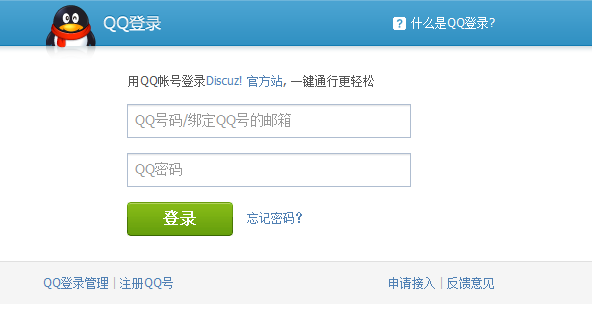输入QQ号码（IE下可自动识别当前登录QQ）、密码，点击登录，成功登录后，用户可自行选择向网站授权的操作项目：
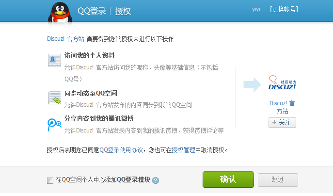授权完成后，跳转回登录前页面，登录框处将显示：
用户可以完善账号信息：
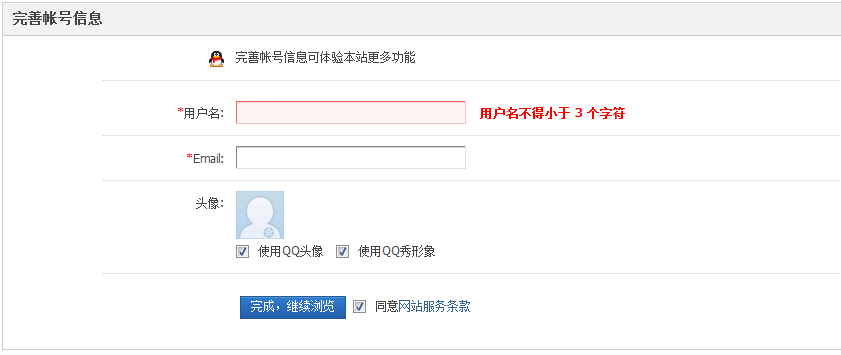或是绑定论坛已有账号：
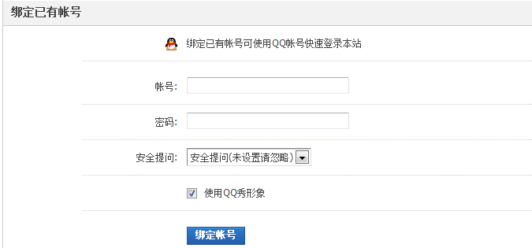完成即可。
二、QQ帐号登录：
已注册用户直接点击“用QQ帐号登录”的图标登录：
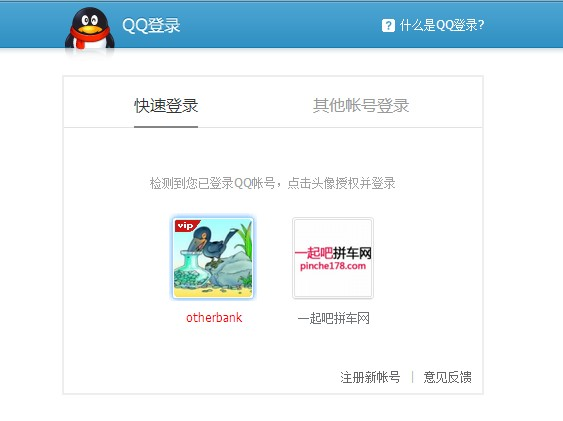QQ会提示已成功登录某站点
三、发帖同步到QQ空间、腾讯微博；
发帖时可以将动态发送到QQ空间和腾讯微博，在“发表帖子”按钮右侧有将主题同步到QQ空间和腾讯微博：
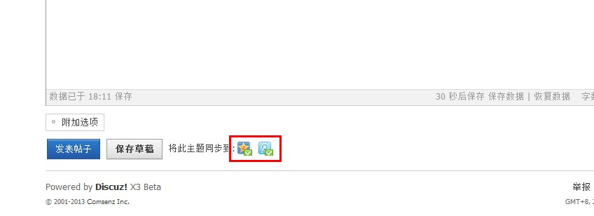四、分享已发帖子到QQ好友和群、QQ空间、腾讯微博、朋友网
在帖子的左下方，有分享到QQ好友和群、QQ空间、腾讯微博、腾讯朋友项：
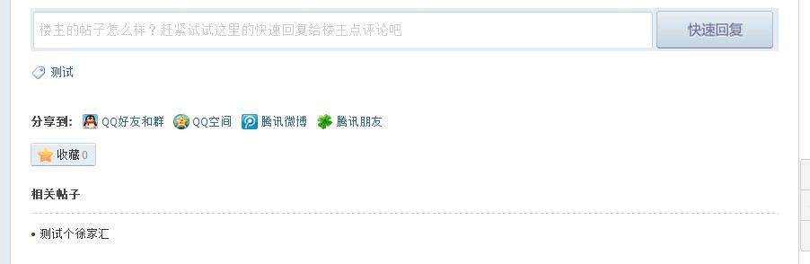我们以“QQ好友和群”为例来看，点击分享到“QQ好友和群”，将会弹出如下页面：
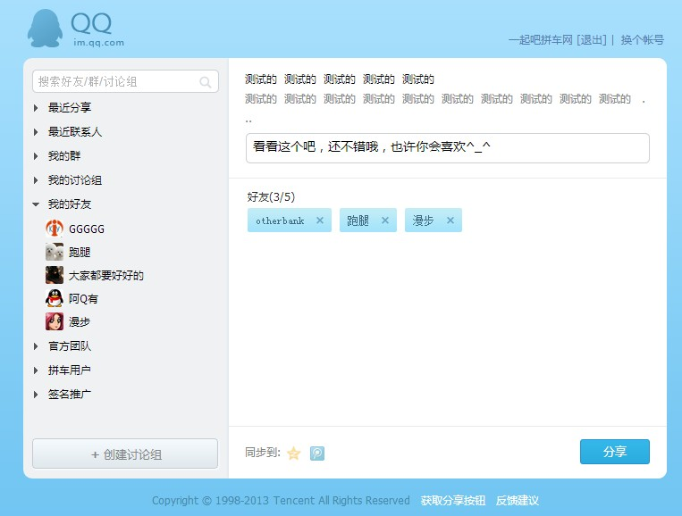填写分享理由，分享给QQ好友和群。
我们再以“分享到QQ空间”为例来看，点击分享到QQ空间，将会弹出如下页面：
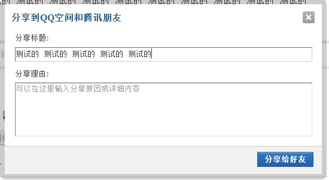填写分享理由，分享给好友即可分享到自己的QQ空间。
五、回帖同步到微博
回帖时勾选将此回复同步到腾讯微博即可同步到用户的微博：
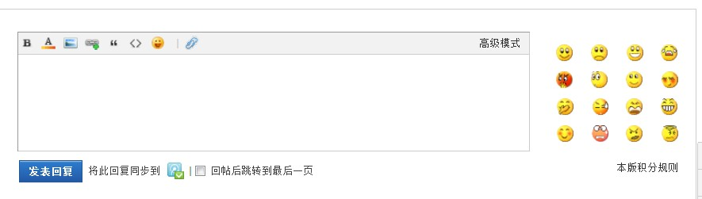六、微博回流
微博同步的主题帖，如果有微博好友评论、转发时会同步内容到你的帖子：
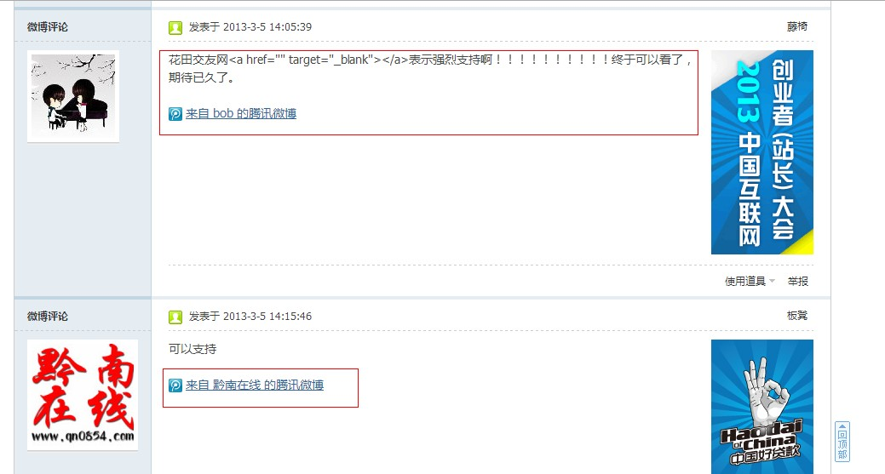七、官方认证空间和微博帐号展示
在后台设置站点官方的认证空间和官方微博帐号会显示在论坛首页,开启“喜欢”组建，用户可通 过一键点击“喜欢”按钮，成为网站认证空间的粉丝。成为粉丝后不仅能快速将网站 分享给腾讯的海量用户，同时可以持续关注该网站。从而提升网站流量和用户对网站 的黏度！开启“一键收听站点微博”， 用户点击收听按钮，将立即收听网站腾讯微博帐号。：